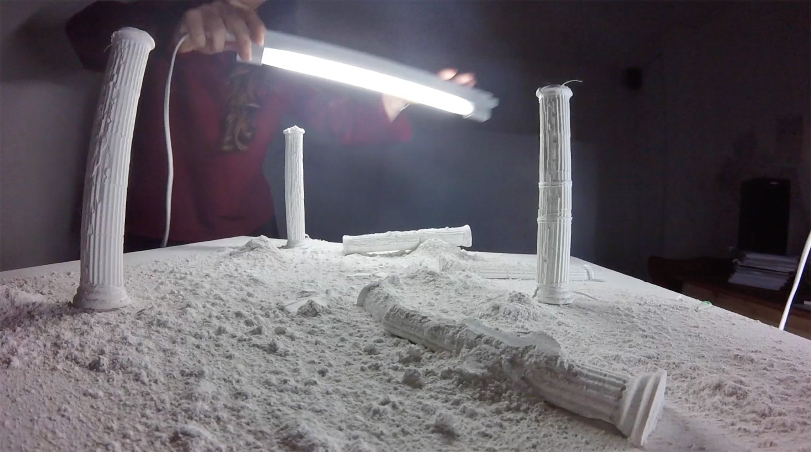
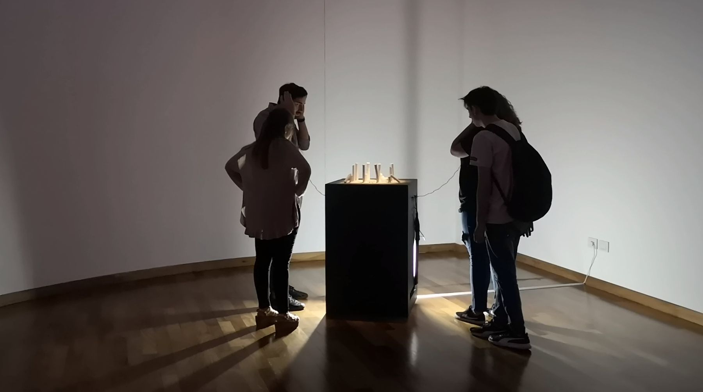
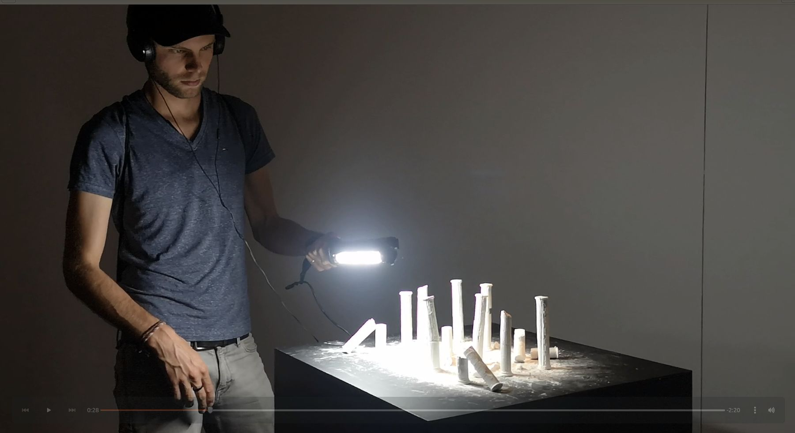
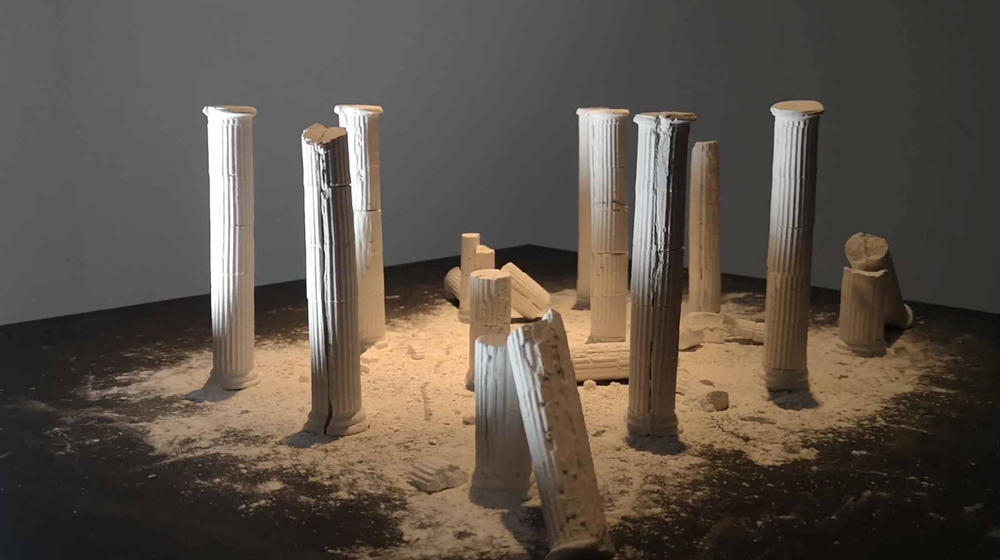
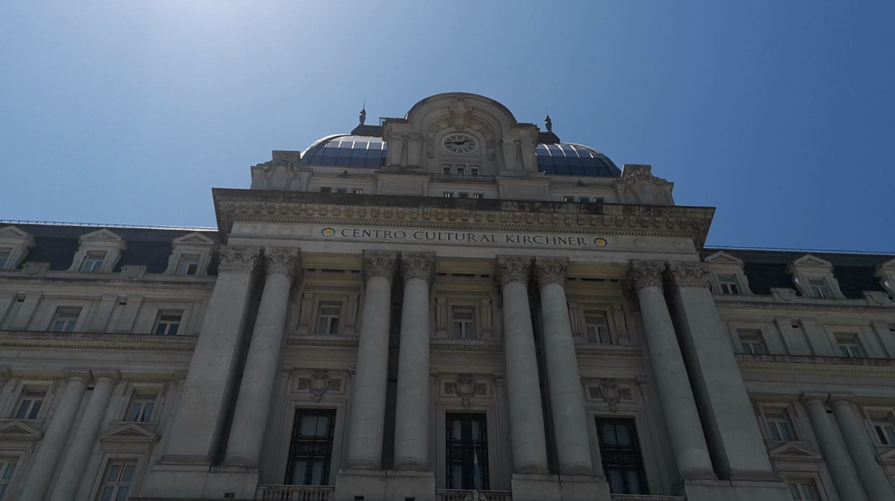
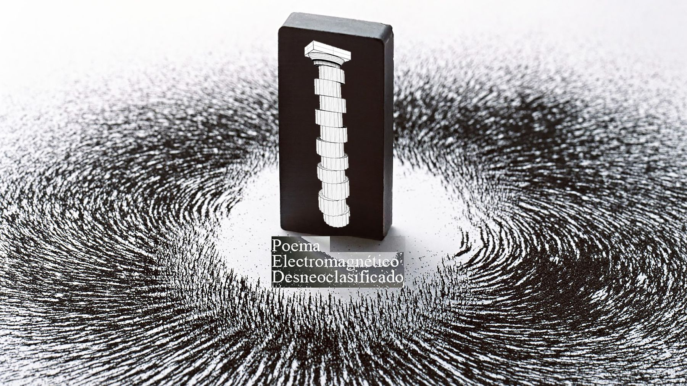
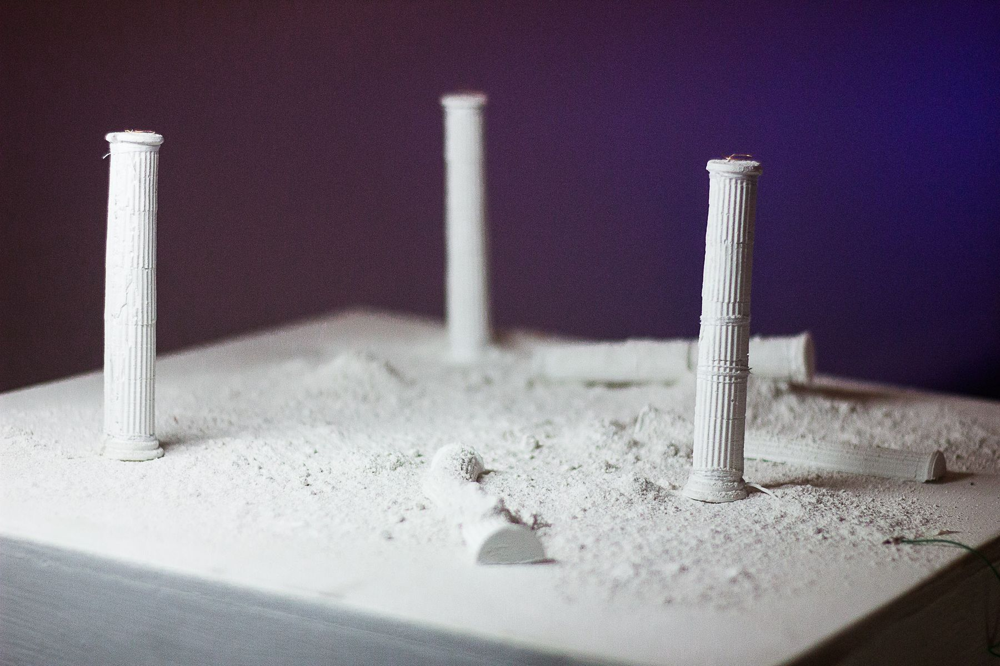
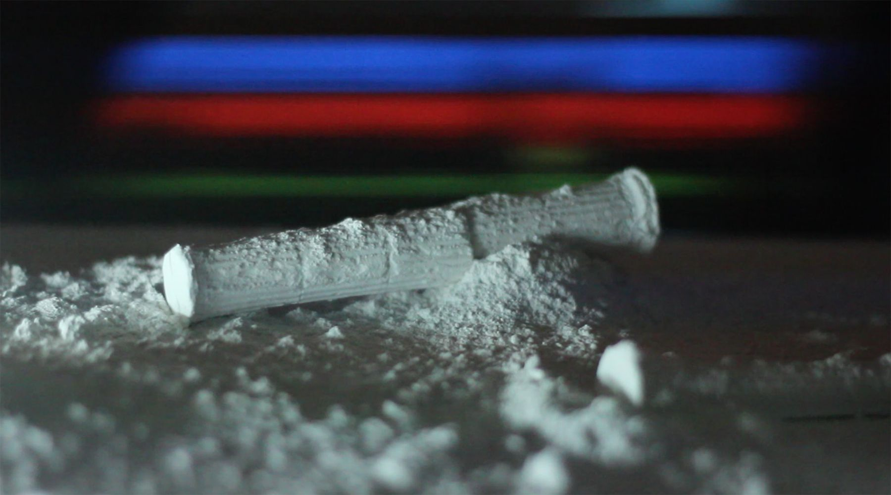

Ped. Deneoclassified Electromagnetic Poem

PED is an experiment in discursive feedback, an exploration of sound space, and a way of revealing the invisible forces that animate words. It is the articulation of a text affected by the electromagnetic waves that emanate from -and inhabit- architectural spaces.
Interactive/ Algorithmic Literature / Electromagnetic
Arduino, Fluorescent tubes, 3D printing, plaster molds, natural language processing. / 40cm x 40cm x 100cm
Architecture and speech.
We search in the ruins, in the distant origins, and in the architectural structures as recipients of discourses. We start from the neo-classicist space to think how their own philosophical assumptions (logic, clarity, universal validity) and social goals (morality, education) extend the foundations for their own deconstruction.
Over there, where the electromagnetic waves subsist, between our bodies and within them, in the space between what is not seen and what is imagined, lays the uncertain meaning of this poem.

Writing with electromagnetic fields
The sound poem declared appropriately by the computational interface of the installation is generated from the sensing, in real time, of electromagnetic waves that recombine neo-classical texts and philosophical texts found within the installation space.






Exhibitions
- Art, and Technology Awards. National Arts Fund. Kirchner Cultural Center, Buenos Aires, 2019.
- Fase 8. Art, Science and Technology Fair. Bicentennial National House, Buenos Aires, 2016